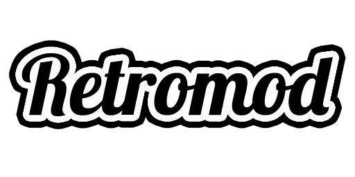

Retromod is a multi-system emulator for Garry's Mod, using BizHawk as its core. It supports many game consoles such as the NES, SNES, GB, GBC, GBA, Sega Genesis, Sega Master System, Sega Saturn, N64, and PSX.
Note: The Retromod client only works on Windows computers.
Download Retromod
Update Retromod